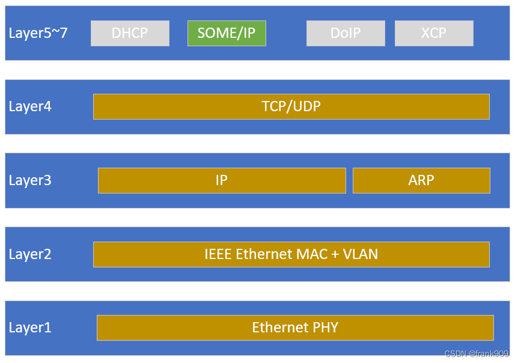
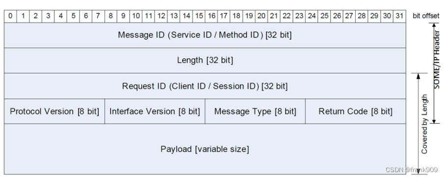
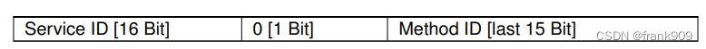
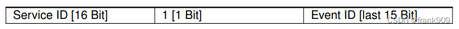
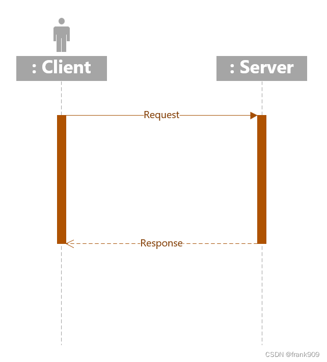
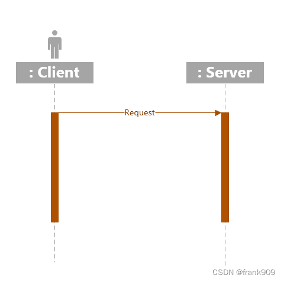
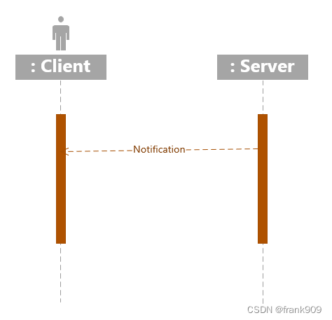

6.4.2.1. SOME/IP 简述
SOME/IP全称是Scalable service-Oriented MiddlewarE over IP,也就是IP协议的面向服务的可扩展性通信中间件协议．
SOME/IP支持提供以下服务:
服务发现(Service Discovery)
远程服务调用(RPC,remote producer call)
读写进程信息(Getter & Setter)
汽车协议开发中CAN是比较常见的一种协议，但CAN是 面向信号 的，而SOME/IP则是 面向服务 的．

6.4.2.1.1. SOME/IP 消息格式
SOME/IP协议一般指代SOME/IP, SOME/IP-SD, SOME/IP-TP 三种

Message ID: Service ID或Method ID
Message ID可以指代一个远程调用RPC的Method或是一个服务的Event. Method ID和Event ID占据低15bit,中间1bit用来区别两者，高16bit代表service id


Length: 消息长度，从Request ID算起
Request ID
Protocal Version: 协议版本号
Interface Version: 接口版本号
Message Type: 消息类型
Type ID |
消息类型 |
解释 |
0x00 |
REQUEST |
单纯的Request, 无Response |
0x01 |
REQUEST_NO_RETURN |
一个Fire&Forget类型的Request |
0x02 |
NOTIFICATION |
一个关于Event的callback的request,无response |
0x80 |
RESPONSE |
一个Response |
0x81 |
ERROR |
一个带ERROR信息的Response |
0x20 |
TP_REQUEST |
单纯的TP Request,无Request |
0x21 |
TP_REQUEST_NO_RETURN |
一个fire&forget类型的tp request |
0x22 |
TP_NOTIFICATION |
一个关于Event的callback的TP request,无response |
0xa0 |
TP_RESPONSE |
一个TP Response |
0xa1 |
TP_ERROR |
一个带ERROR信息的tp request |
Return Code: 返回编码
根据messagetype不同，return code不同，一般是E_OK(0x00),但如果是Response或者是Error的话就不会是0x0
Payload: 数据负载
SOME/IP底层可以基于TCP或者是UDP,UDP协议一般限制在1400Bytes, 但如果是TCP协议，通过数据分段传输可以实现更大容量的传输
6.4.2.1.2. 通信模式
SOME/IP消息通信类型
R&R(Request & Response)
最常见的通信模式就是请求/响应模式，客户端发送请求消息，服务器给予回应

F&F(Fire & Forget)
客户端发送Request, 无需Response的操作称为Fire&Forget

Notification
Notification代表的是一种Publish-Subscribe通信机制，Server端会主动推送信息给订阅方.Notification分三种情况
Cycle Update: 周期性的发送相关value的变化
Update On Change: 如果value发生变化，则往外推送
Epsilon Change: 如果value的值大于相应的epsilon的值，那么对外推送消息

Event